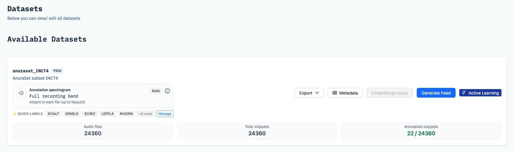

Datasets
A dataset is a folder of audio recordings. YAPAT reads the files where they are and never changes them. The Datasets page lists every dataset you can access and is where you prepare one for annotation.
You need: an administrator account to add datasets and generate embeddings. Every user can browse datasets and manage quick labels.
Add a dataset
- On the Datasets page, click Add Dataset.
- Enter a name and, optionally, a description.
- Choose the type: PAM for passive acoustic monitoring (PAM) of soundscapes, or FOCAL_RECORDINGS (recordings made to capture one animal or species, labelled with it) for training a WSSED model (see below).
- Pick the folder with the audio files, and optionally the team the dataset belongs to.
- Optionally set a maximum spectrogram frequency in kHz; leave it empty to show the full frequency range.
- Save. YAPAT scans the folder in the background and lists each audio file it finds.
Prepare it for annotation
Before a dataset can be annotated, YAPAT needs embeddings: a numeric summary of every 3-second clip. On the dataset card, an administrator clicks Generate Embeddings and picks the embedding model. The job runs in the background; when it finishes, the dataset is ready and can be opened in the Annotation Hub.

Finding a dataset
Administrators and team owners get a toolbar above the list: search by name or folder path, filter by team or dataset type, and sort by name, age, number of clips, or number of labels.
The dataset card
| On the card | What it does |
|---|---|
| Audio files, snippets, annotated snippets | How many recordings and 3-second clips the dataset has, and how many clips are labelled. The file count opens a searchable list of the recordings. |
| Annotation spectrogram | The frequency range spectrograms show. Auto uses each file's full range; administrators and team owners can change it. |
| Embeddings | Shows Embeddings ready once the dataset can be annotated; administrators see Generate Embeddings before that. |
| Metadata | Download a comma-separated values (CSV) template, fill in location, date, and time for each recording, and upload it. You can review and rename locations before importing. The Hub's filters use these values. |
| Quick labels | Shows the first labels of the dataset's list; Manage edits it (below). |
| Active Learning | Opens the dataset in the Annotation Hub. |
| Export | Downloads the labels as CSV or JavaScript Object Notation (JSON), once something is labelled. See Import & Export. |
Quick labels
Quick labels are the short list annotators pick from. Manage on the card opens the list; add labels from three sources and click Save:
- Global Biodiversity Information Facility (GBIF) — species.
- Environment Ontology (ENVO) — environmental sounds such as rain or wind.
- Local — your own free-text label, for example "No biophony".
In the Hub, this list is combined with the model's species, your team's frozen label space, and each annotator's own pinned species.
Training a model with WSSED
For FOCAL_RECORDINGS datasets, the WSSED page uses Weakly Supervised Sound Event Detection (WSSED): a way to train a sound event detection model from recordings that are labelled only with the species they contain, not with the exact time of each call. Training runs on a separate server with a graphics processing unit (GPU), and the finished model becomes the dataset's first active-learning model. See WSSED for how it works.
- Select the dataset in the Dataset Explorer.
- Choose the model (BirdNET, CDur, or TALNet) and its settings, such as the number of epochs (50 by default), learning rate, and detection threshold.
- Click Start Training. The panel shows the epoch progress and picks a running job up again after a page reload.
- When training completes, click Register for Active Learning, then Open Active Learning to go to the Annotation Hub.
The WSSED card is shown to administrators and to users with access to a FOCAL_RECORDINGS dataset.
- The folder picker lists folders under the mounted data volume (
HOST_DATA_ROOT, mounted read-only at/data). - Create:
POST /api/datasets/; embeddings:POST /api/datasets/{id}/embeddings. See Import & Export and Snippets & Embeddings. - WSSED needs the GPU server at
WSSED_GPU_SERVER_URL. See Installation.